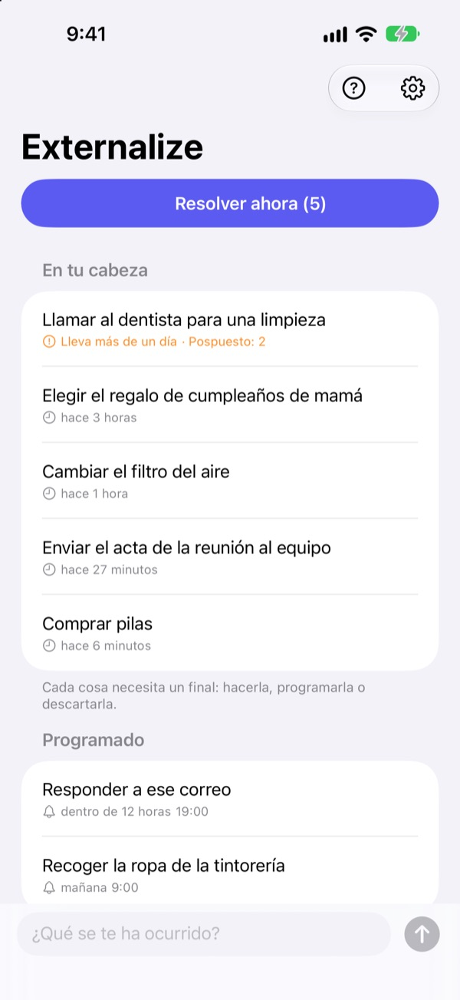
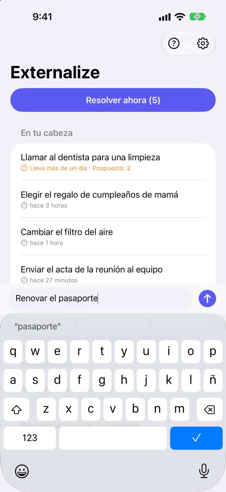
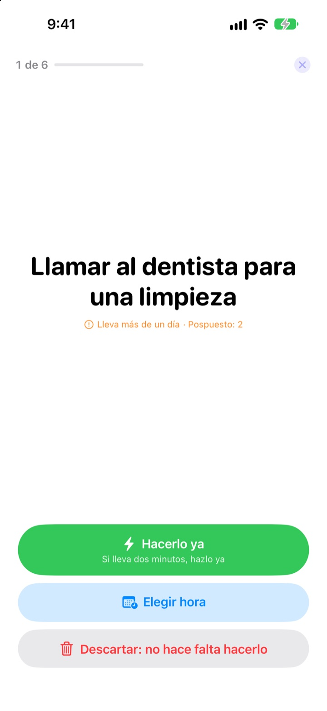
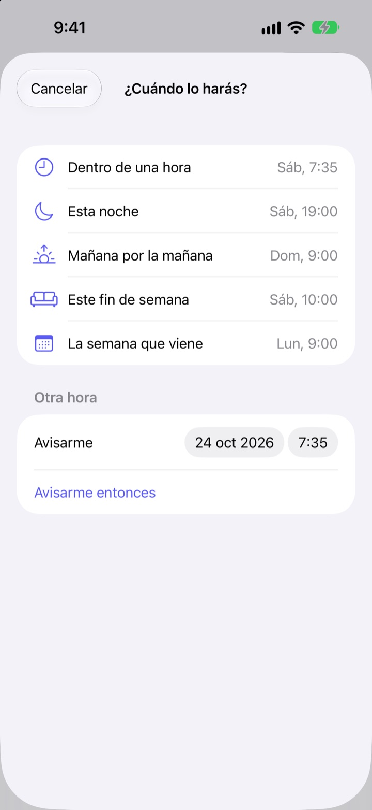

Anótalo ahora.
Resuélvelo esta noche.
«Ah, es verdad, tengo que…». Sácalo de tu cabeza en pocas palabras y suéltalo. Por la noche, resuelve lo que quede, una cosa cada vez.
Todas las funciones son gratis. Sin cuenta ni registro.

Pruébalo aquí
Escribe algo que tengas en la cabeza o toca un ejemplo. Después pulsa «Resolver ahora» y dale un final a cada cosa.
Hasta lo más pequeño ocupa sitio en la cabeza
En la ducha, en un semáforo, justo antes de dormirte: «Tengo que hacer aquello». No tienes dónde apuntarlo, así que lo retienes, y lo que estabas haciendo se resiente. Las apps de tareas te piden antes una lista y una fecha límite, y apuntarlo ya se convierte en otra tarea.
Tres segundos y a otra cosa
Abre la app y escribe en la línea de abajo. Sin listas, carpetas ni fechas límite.
Toca el widget de la pantalla bloqueada y se abre con una línea en blanco. Di Recuerda en Externalize a Siri o asígnalo al botón de acción, y queda guardado sin abrir la app.

Por la noche, una cosa cada vez
Si queda algo pendiente, recibes un solo aviso a las 21:00. Si no queda nada, no te molesta.
Al empezar, las cosas aparecen de una en una, en grande. Elige «Hacerlo ya», «Elegir hora» o «Descartar» y pasa a la siguiente. Si son dos minutos, pon el temporizador y quítatelo de encima.

Nada se queda pudriéndose
Elige «Dentro de una hora», «Esta noche», «Mañana por la mañana», «Este fin de semana» o «La semana que viene» y volverá en ese momento. Desde la notificación puedes marcar «Hecho», pasarlo a «Mañana por la mañana» o «Descartar».
Lo que lleva más de un día esperando y lo que vas aplazando una y otra vez queda marcado, así ves qué se te escapa siempre.

Empieza en tres pasos
- 1
Anótalo
Unas palabras en la app, en el widget de la pantalla bloqueada o con Siri, lo que tengas más a mano.
- 2
Permite las notificaciones
Te lo pregunta una vez, la primera vez que anotas algo. Sirven para el aviso de la noche y las horas que elijas.
- 3
Resuélvelo por la noche
Toca el aviso o «Resolver ahora» y dale un final a cada cosa.
Desde la propia lista
- Tocar una cosa
- elegir «Hecho», «Elegir hora» o «Descartar»
- Deslizar a la derecha
- Hecho (sale de la lista)
- Deslizar a la izquierda
- Descartar, o «Programar» para elegir hora
- Resolver ahora
- repasar lo que queda, de una en una
- Recuerda en Externalize
- decírselo a Siri sin abrir la app
- Ajustes ▸ Aviso de la noche
- cambiar la hora o desactivarlo
Al programar, «Esta noche» son las 19:00, «Mañana por la mañana» las 9:00, «Este fin de semana» el sábado a las 10:00 y «La semana que viene» el lunes a las 9:00. También puedes elegir cualquier fecha y hora.
Preguntas frecuentes
¿Puedo anotar algo sin abrir la app?
Sí. Di Recuerda en Externalize a Siri: te preguntará qué anotar y lo guardará. Asigna el atajo «Anotar» al botón de acción en Ajustes y basta con una pulsación.
¿Cómo añado el widget de la pantalla bloqueada?
Mantén pulsada la pantalla bloqueada, toca Personalizar y elige la pantalla bloqueada, toca la zona de widgets y añade Externalize. Al tocarlo se abre una línea en blanco y muestra cuántas cosas quedan. También hay un widget pequeño para la pantalla de inicio.
¿Puedo cambiar o desactivar el aviso de la noche?
Toca el engranaje de arriba a la derecha ▸ Aviso de la noche para cambiar la hora o desactivarlo. Por defecto es a las 21:00 y no suena los días en que no queda nada.
No me llegan notificaciones.
Si los ajustes de Externalize indican que las notificaciones están desactivadas, toca el botón que aparece para activarlas en los Ajustes del iPhone. Los días sin nada pendiente no hay aviso de la noche, y es lo normal.
¿Cómo vuelve algo que he programado?
Te llega una notificación a la hora elegida. Mantenla pulsada para elegir «Hecho», «Mañana por la mañana» o «Descartar». Si no haces nada, vuelve a «En tu cabeza» y lo resuelves la próxima vez.
¿Puedo recuperar algo que marqué como hecho o descarté?
No. Lo resuelto sale de la lista y no hay archivo. Si aún dudas, elige una hora en lugar de descartarlo.
¿Lo anotado pasa a un iPhone nuevo?
No. Todo se queda en este dispositivo y nunca se envía a iCloud ni a un servidor. Si borras la app, se borra también.
¿En qué dispositivos funciona?
En iPhone con iOS 17 o posterior.
¿Dudas o un error? Escribe a mizzking75@gmail.com. Si nos dices tu modelo de iPhone y la versión de iOS, lo revisaremos antes.